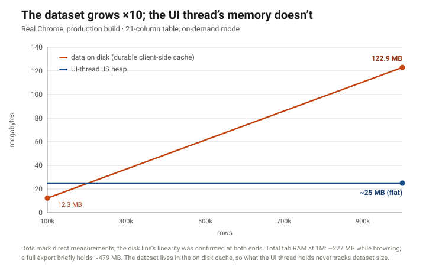

Million-row datasets, in the browser, instantly usable
How we made large-dataset editing GUIs viable on the web — no desktop install, no per-page waiting.
Date: 2026-07-11 · Basis: measured, production builds — renderer and evidence class stated inline · Infrastructure cost: $0 — the data layer runs entirely client-side
The problem
Agentic AI tools increasingly need to show and edit large structured datasets — power-system models, financial ledgers, scientific tables — with hundreds of thousands to millions of rows and tens to hundreds of columns. The conventional wisdom is that this forces a heavyweight desktop application: the browser “can’t handle it.”
It mostly can’t — if you build it the obvious way. A normalized database behind an API that recompiles the view on every page render produces a GUI that is unusable at scale. In a production deployment of that pattern we observed firsthand, editing a ~100k-row table meant a minute or more of wait per page, climbing to tens of minutes by ~500k rows — re-computed on every interaction, every time. That experience is what convinces teams the web is a dead end for big data.
It isn’t. The architecture is the dead end.
What we built
A client-side data layer for large-dataset web GUIs. The shape, at the architecture level:
- Interaction is instant end-to-end — scroll, select, and move anywhere in the dataset with no per-page loading; a full-table export runs as a single fast operation, not a paged crawl.
- The full dataset is backed by a durable client-side cache, so any view is served on demand without a round trip.
- Sorting and filtering stay smooth at scale — served by the data layer, off the UI thread, where naive in-page data paths fall over.
Two complementary modes compose into one layer: a resident mode that holds the active table in memory for instant whole-dataset interaction, and an on-demand mode that serves views out of the durable cache with a near-constant UI memory footprint. Each covers the region where the other thins out. And the data layer is built around a storage-adapter contract, so a browser, a browser with persistent local storage, and a desktop shell are adapter swaps rather than rewrites — the web build isn’t a compromise, it’s the default.
Results (measured, production builds)
Time from clicking a tab to the whole dataset being usable — scrollable to the last row, selectable, exportable:
| dataset | naive production stack | our data layer |
|---|---|---|
| ~100k rows | minutes per page | ~0.2 seconds |
| ~500k rows | tens of minutes | well under a second |
| 1,000,000 rows | (effectively unusable) | 0.9–2.1 seconds |
| 1,000,000 rows × 108 columns (very wide) | — | ~2.8 seconds |
[Evidence class: resident mode on a 21-column table, measured on two renderers. A desktop-shell (embedded-Chromium) build sweeps linearly from 0.11 s at 100k to 0.89 s at 1M; standalone Chrome read 0.24 s at 100k and 2.14 s at 1M. The table quotes values covering both: ~0.2 s at 100k, 0.9–2.1 s at 1M. The 1M×108 figure (~2.8 s) is the desktop-shell build, uncorroborated at that width. 20–30% run-to-run variance is normal at this scale. The naive-stack column is banded from a real deployment; see Provenance.]
Two more results that matter for real tools:
- First screen in ~15 milliseconds. The on-demand mode serves the first visible window in ~9–23 ms regardless of dataset size or width, so the UI is responsive immediately. [measured across all sizes at both 21 and 108 columns]
- Many large tables open at once. A realistic multi-table workload — several large tables plus many smaller ones — stays comfortably within a single browser tab’s memory budget, with room to spare. [measured; exact sizes deliberately banded] The dataset sizes that supposedly force a desktop app fit on the web.
The scaling picture

Grow the dataset ×10 and the on-demand mode’s UI-thread heap doesn’t move: the data lives in the durable cache, and the UI only ever holds the window you’re looking at. [Disk measured clean at 100k and 1M with linearity confirmed between them; steady-state heap measured at 1M; spot-measurements from separate sessions at 1k–100k sit in the same ~13–29 MB band. The flat line is the UI thread’s heap — the whole tab sits near ~227 MB at 1M while browsing.]
Honest boundaries
- The numbers are workstation-anchored. Everything above was measured on a high-end workstation-class machine. Browser runtime environment matters as much as hardware: we measured the same cache-fill operation ~50× slower under a constrained headless preview runtime. The architecture holds on modest machines; the specific milliseconds don’t travel — which is exactly what the forthcoming live demo is for: measure it on your own hardware.
- The two modes trade differently — we don’t blur them. The headline table is the resident mode: fastest to whole-dataset-usable, but its memory grows with the data (roughly half a GB at 1M×21 columns, ~1.7 GB at 1M×108), it meets the browser’s per-tab memory wall at a few million rows, and its in-memory sort is the conventional kind — fine at moderate scale, but it’s the data-layer-routed path that stays smooth past it. The flat ~25 MB line is the on-demand mode: near-constant UI memory at any scale, in exchange for a one-time cache fill (~15 s at 1M rows on our box — it runs in the background behind the resident paint when the modes are composed; only a cold, on-demand-only first load makes you wait on it) and a first-sort cost on a fresh column (~1.6 s at 1M; repeats are ~10 ms).
- Extreme width flips the winner. At 1M rows × 108 columns the resident mode is the one that carries the load; the on-demand mode’s full-width bulk ingest is what gives out first at that width. The composition is the point — each mode covers the region where the other thins out.
- Run-to-run variance is real. 20–30% between identical runs is normal at this scale, and one renderer family ran the 1M operation ~2.4× slower than another. We publish the clean canonical runs and say so.
Why it matters
- No install. The capability that used to require a desktop application now runs in a tab — which is exactly what agentic AI tools need: zero-friction, shareable, sandboxed.
- It composes. Resident-active-data and an on-demand backbone aren’t competing choices — they compose into one layer that is fast to first paint and holds everything when you need it.
- It’s portable by design. The storage-adapter contract makes the desktop build an adapter swap, not a rewrite — browser today, desktop next, same data layer.
A live, public demo of this data layer — a million rows you can scroll, sort, and edit in your own browser tab — is in preparation; this page will link it when it ships.
What’s next
The GUI and data layer are the substrate. The companion track replaces the heavy optimization engine behind these models with a learned machine-learning surrogate — keeping the data layer and the compute engine cleanly separated so the swap is a drop-in. That work is now published: When does ML actually help LP dispatch?
Provenance
Every number above traces to a measured artifact from two benchmark rounds (2026-06-24 and 2026-06-25) run in real browsers against production builds, plus a clean re-test that superseded two earlier figures — the superseded values are not used here. The headline table is a single clean sweep on one renderer, corroborated (with the stated spread) on a second; the scaling figure’s disk line is measured at both endpoints with linearity confirmed; the multi-table result is a single measured configuration, banded deliberately. The naive-baseline column is a firsthand observation of a real third-party production deployment of the normalized-DB→API→GUI pattern, reported as bands and unattributed by design. The dataset is a synthetic power-system network table generated against an open schema — no proprietary data anywhere in the pipeline.
Licensed CC BY-SA 4.0.
Cite this essay
Higuera, D. (2026, July 11). Million-row datasets, in the browser, instantly usable. AES Research. https://aesresearch.ai/writing/million-rows-in-the-browser.html
@misc{higuera2026millionrows,
author = {Higuera, Daniel},
title = {Million-row datasets, in the browser, instantly usable},
year = {2026},
month = {jul},
publisher = {AES Research},
url = {https://aesresearch.ai/writing/million-rows-in-the-browser.html}
}